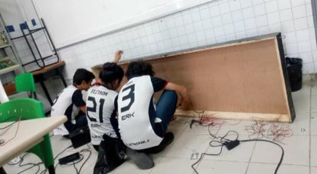

Objetivo da ODS4
Quem sou?
Meu nome é Yasmin Kaline, moro em Natal/Rio Grande do Norte, tenho 17 anos e sou estudante do segundo ano de eletrônica do IFRN. No curso de eltrônica me apaixonei pela área da robôtica e percebi que essas duas áreas o número de meninas é muito inferior ao número de meninos por isso gasto toda minha energia para mudar essa realidade.
Para isso tenho dois projetos para incentivar as meninas, o primeiro deles se chama MARIA, ele tem esse nome justamente para chamar atenção, é um projeto para ensinar robôtica para meninas por meio de palestras e minicursos. O outro projeto se chama STEM GIRLS e o seu intuito é incentivar as meninas em todas as áreas de STEM (Ciências, Tecnologia, Engenharia e Matemática), também realizo uma pesquisa-ação sobre o porque as meninas entram menos no curso técnico de eletrônica do IFRN-Campus Zona norte.
Sites legais para meninas :)
